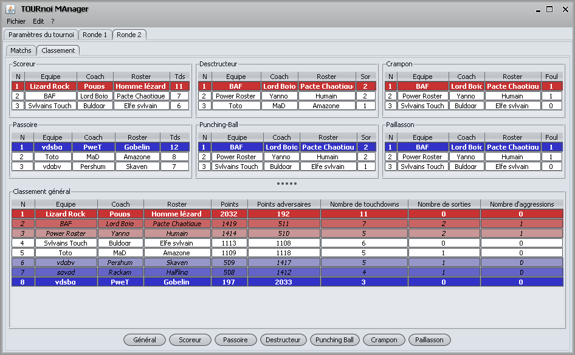

Pour voir les classement, il suffit de se rendre sur l'onglet
correspondant à la ronde et de sélectionner le sous onglt
"Classement". Les classements sont mis à jours dès qu'un
résultat d'un match change.

De plus les boutons du bas de l'écran permettent d'accéder à une version imprimable des classements.